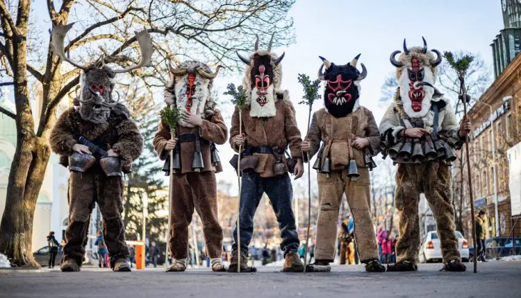
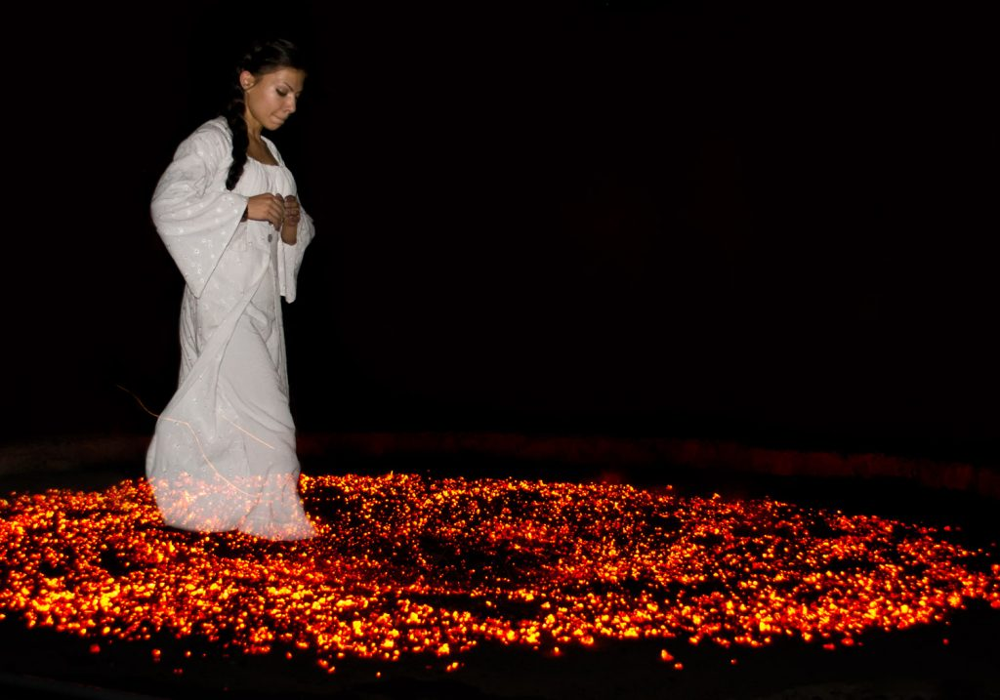
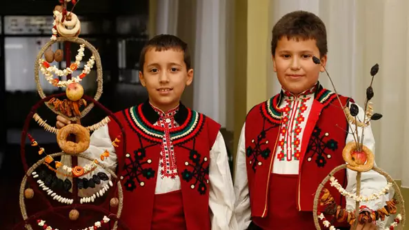
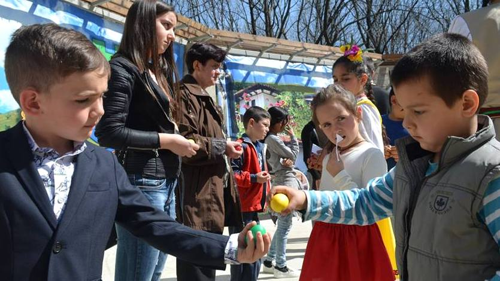
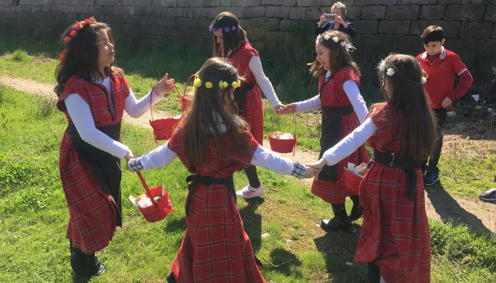

Кукерство
Кукерството е древен български ритуал за прогонване на зли духове и демонични сили. Изпълнителите (кукери) танцуват своя обреден танц, облечени в атрактивни костюми и страшни маски с дървена конструкция. Облеклата им са изработени от конци, вълна и изрезки от различни платове.
Традиционният кукерски танц се изпълнява на празници като Коледа, Богоявление, Сирни Заговезни и Нова Година, както и по български фолклорни фестивали.
Нестинарство
Нестинарството представлява изпълнение на динамичен фолклорен танц върху жарава. Това е един от най-ефектните български ритуали, именно защото нестинарите стъпват боси по горещи въглени!
Традицията повелява жаравата да бъде подготвена от старши нестинарите, които не участват в танца, а правят път на младите нестинари. Нестинарския танц е огромна атракция за чуждестранните туристи и често се изпълнява на големи народни събори и фестивали.
Сурвакарство
Народният обичай сурвакарство е добре познат на българските семейства и все още не е потънал в забвение. Новогодишният ритуал е любим на малките сурвакари, които обхождат селските домове и сурвакат по-възрастните за здраве и дълголетие.
Според старите български традиции, сурвакарите са деца на възраст до 12 години. Те обикалят къщите в тяхното селище с цветни сурвачки, направени от клонки и декорирани с пуканки, сушени плодове, прежда и вълна.
Самият обред “сурвакане” включва потупване по гърба със сурвачката и изричане на стихче, с пожелание за дълъг живот. В замяна, сурвакарите получават пари или храна от по-възрастните, като благодарност.
Великденска борба с яйца
Този толкова прекрасен християнски обред е един от най-добре запазените и най-малко изменени български традиции във времето. И има защо. Кой би пропуснал забавата с боядисването на първия червен борец и декорирането на многоцветни шарени яйца?
Нека не подценяваме и удоволствието да счупиш бореца на приятел навръх Великден, както и похапването на “падналите в битка” яйца.
Лазаруване
Лазаруването е стар обичай, изпълняван на Лазаровден. Главната роля в ритуала заемат млади необвързани момичета, готови за женитба.
Още от сутринта, лазарките обличат своите невестински дрехи и обикалят селските къщи с танци и песни, носейки щастие във всеки дом. Като част от ритуала – девойките приемат яйца и брашно, като дарове от стопаните на всяка къща, за замесване на среднощен обреден хляб.
Старите народни схващания повеляват, че всяка млада мома трябва да е лазарка. Ако някоя девойка не се включи в ритуалните празници и месенето на хляба, се е вярвало, че тя лесно ще бъде открадната от змей.